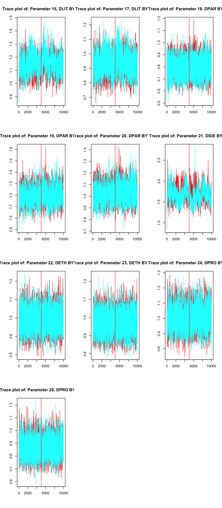
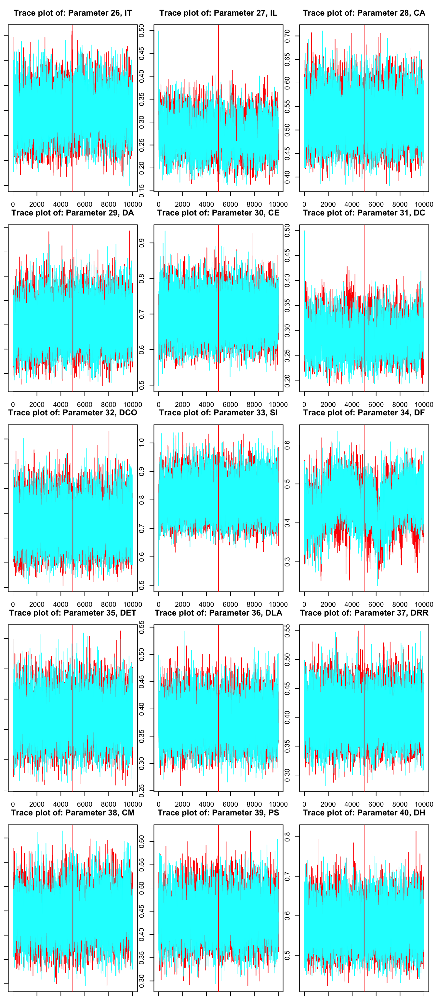
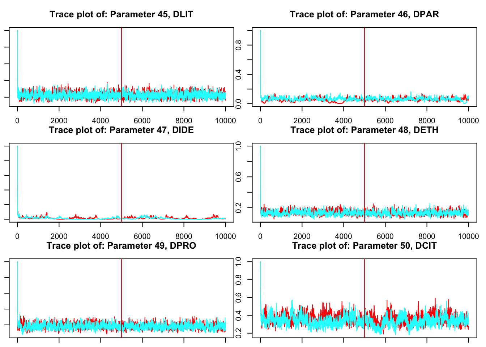
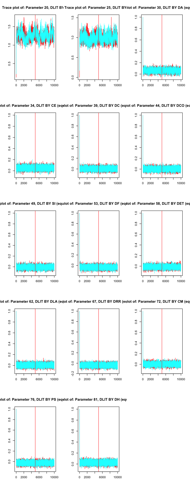
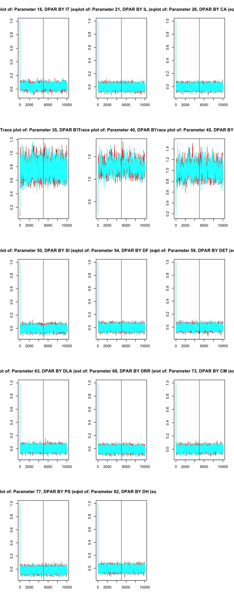
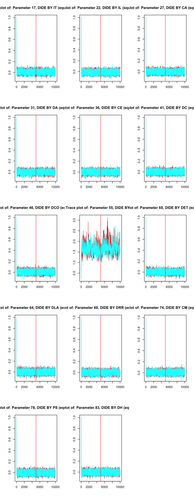

library(MplusAutomation)
library(tidySEM)
library(lavaan)Bayesian CFA
loading packages
Model

Data
ชุดข้อมูลได้จากไฟล์ข้อมูล DataStudent.xlsx ดังนี้
library(readxl)
library(dplyr)
dat<-read_excel("DataStudent.xlsx")
dat_ana<-dat%>%select(1:15)
dat_ana<-scale(dat_ana)%>%data.frame()
glimpse(dat_ana)Rows: 450
Columns: 15
$ IT <dbl> -0.4591276, 0.4591276, 1.3773827, -0.4591276, 0.0000000, -0.918255…
$ IL <dbl> 0.2754431, 1.5532717, 0.7013859, -1.0023856, 0.7013859, -1.0023856…
$ CA <dbl> 0.1172921, 1.8062987, 0.9617954, 0.9617954, 0.5395438, -0.7272112,…
$ DA <dbl> -0.2295886, 1.4367803, 0.7702327, -1.5626837, 0.4369589, -0.562862…
$ CE <dbl> 0.1620310, 1.5642226, 0.8631268, 0.1620310, 0.5125789, 0.1620310, …
$ DC <dbl> -1.1722540, 1.2431045, 0.2769611, -1.1722540, 0.7600328, -1.655325…
$ DCO <dbl> -1.5612006, 0.9719975, 0.5497978, -1.9834003, 0.9719975, -1.561200…
$ SI <dbl> -0.1766740, 1.4294531, -1.7828011, -0.5782058, 0.6263896, 0.224857…
$ DF <dbl> -0.53576881, 1.29766059, 1.29766059, -0.53576881, 1.29766059, -1.4…
$ DET <dbl> -0.42245666, 1.01049935, 0.05519534, -1.37776067, 1.01049935, -1.3…
$ DLA <dbl> -0.1400416, 0.3302473, 0.3302473, -1.5509082, 1.2708250, -1.080619…
$ DRR <dbl> -0.97940601, 0.51123448, 1.00811464, -0.97940601, 1.00811464, -1.4…
$ CM <dbl> -0.6997050, -0.2642040, 0.6067981, -1.1352060, 1.4778002, 0.606798…
$ PS <dbl> -0.79173364, -0.37307308, 0.88290860, -0.79173364, 1.30156916, 1.3…
$ DH <dbl> 0.09157388, 0.85468951, -0.67154175, 0.09157388, 1.61780514, -1.05…Create & run Mplus model
## create mplus model object via R
based.model<-mplusObject(
TITLE = "CFA based model",
ANALYSIS = "
ESTIMATOR = BAYES;
CHAINS = 2;
PROCESSORS = 2;
FBITERATIONS = 10000;
",
MODEL = "
DLIT BY IT IL CA;
DPAR BY DA CE DC DCO;
DIDE BY SI DF;
DETH BY DET DLA DRR;
DPRO BY CM PS DH;
DCIT BY DLIT DPAR DIDE DETH DPRO;
",
OUTPUT = "standardized TECH1;",
PLOT = "TYPE = PLOT2;",
rdata = dat_ana
)
# run
result<-mplusModeler(
based.model,
modelout = "basemodel.inp",
run = 1L)Extract the results
เราสามารถเรียกดู sub-objects ที่เก็บอยู่ใน result ได้จากการใช้ฟังก์ชัน objects() ดังนี้
objects(result) [1] "ANALYSIS" "DATA" "DEFINE" "imputed"
[5] "MODEL" "MODELCONSTRAINT" "MODELINDIRECT" "MODELMISSING"
[9] "MODELPOPULATION" "MODELPRIORS" "MODELTEST" "MONTECARLO"
[13] "OUTPUT" "PLOT" "quiet" "rdata"
[17] "results" "SAVEDATA" "TITLE" "usevariables"
[21] "VARIABLE" objects(result$results) [1] "class_counts" "covariance_coverage" "data_summary"
[4] "errors" "fac_score_stats" "gh5"
[7] "indirect" "input" "invariance_testing"
[10] "output" "parameters" "residuals"
[13] "sampstat" "summaries" "tech1"
[16] "tech10" "tech12" "tech15"
[19] "tech3" "tech4" "tech7"
[22] "tech8" "tech9" "warnings" # Model summary stat
result$results$summaries%>%data.frame()%>%t() [,1]
Mplus.version "8.6"
Title " CFA based model"
AnalysisType "GENERAL"
DataType "INDIVIDUAL"
Estimator "BAYES"
Observations "450"
NGroups "1"
NDependentVars "15"
NIndependentVars "0"
NContinuousLatentVars "6"
Parameters "50"
CFI "0.904"
TLI "0.882"
BIC "16342.5"
DIC "16135.77"
pD "48.894"
RMSEA_Estimate "0.092"
RMSEA_90CI_LB "0.09"
RMSEA_90CI_UB "0.095"
RMSEA_pLT05 "0"
ObsRepChiSqDiff_95CI_LB "287.628"
ObsRepChiSqDiff_95CI_UB "366.947"
PostPred_PValue "0"
Filename "basemodel.out" Parameter Specification (tech1)
result$results$tech1$parameterSpecification$nu
IT IL CA DA CE DC DCO SI DF DET DLA DRR CM PS DH
1 1 2 3 4 5 6 7 8 9 10 11 12 13 14 15
$lambda
DLIT DPAR DIDE DETH DPRO DCIT
IT 0 0 0 0 0 0
IL 16 0 0 0 0 0
CA 17 0 0 0 0 0
DA 0 0 0 0 0 0
CE 0 18 0 0 0 0
DC 0 19 0 0 0 0
DCO 0 20 0 0 0 0
SI 0 0 0 0 0 0
DF 0 0 21 0 0 0
DET 0 0 0 0 0 0
DLA 0 0 0 22 0 0
DRR 0 0 0 23 0 0
CM 0 0 0 0 0 0
PS 0 0 0 0 24 0
DH 0 0 0 0 25 0
$theta
IT IL CA DA CE DC DCO SI DF DET DLA DRR CM PS DH
IT 26 NA NA NA NA NA NA NA NA NA NA NA NA NA NA
IL 0 27 NA NA NA NA NA NA NA NA NA NA NA NA NA
CA 0 0 28 NA NA NA NA NA NA NA NA NA NA NA NA
DA 0 0 0 29 NA NA NA NA NA NA NA NA NA NA NA
CE 0 0 0 0 30 NA NA NA NA NA NA NA NA NA NA
DC 0 0 0 0 0 31 NA NA NA NA NA NA NA NA NA
DCO 0 0 0 0 0 0 32 NA NA NA NA NA NA NA NA
SI 0 0 0 0 0 0 0 33 NA NA NA NA NA NA NA
DF 0 0 0 0 0 0 0 0 34 NA NA NA NA NA NA
DET 0 0 0 0 0 0 0 0 0 35 NA NA NA NA NA
DLA 0 0 0 0 0 0 0 0 0 0 36 NA NA NA NA
DRR 0 0 0 0 0 0 0 0 0 0 0 37 NA NA NA
CM 0 0 0 0 0 0 0 0 0 0 0 0 38 NA NA
PS 0 0 0 0 0 0 0 0 0 0 0 0 0 39 NA
DH 0 0 0 0 0 0 0 0 0 0 0 0 0 0 40
$alpha
DLIT DPAR DIDE DETH DPRO DCIT
1 0 0 0 0 0 0
$beta
DLIT DPAR DIDE DETH DPRO DCIT
DLIT 0 0 0 0 0 0
DPAR 0 0 0 0 0 41
DIDE 0 0 0 0 0 42
DETH 0 0 0 0 0 43
DPRO 0 0 0 0 0 44
DCIT 0 0 0 0 0 0
$psi
DLIT DPAR DIDE DETH DPRO DCIT
DLIT 45 NA NA NA NA NA
DPAR 0 46 NA NA NA NA
DIDE 0 0 47 NA NA NA
DETH 0 0 0 48 NA NA
DPRO 0 0 0 0 49 NA
DCIT 0 0 0 0 0 50
attr(,"class")
[1] "mplus.parameterSpecification" "list" Model summary
result$results CFA based modelEstimated using BAYES
Number of obs: 450, number of (free) parameters: 50
Fit Indices:
CFI = 0.904, TLI = 0.882, SRMR = NA
RMSEA = 0.092, 90% CI [0.09, 0.095], p < .05 = 0
AIC = NA, BIC = 16342.497
NULLจะเห็นว่าโมเดลยังไม่ fit และสามารถพัฒนาได้อีก ผลการวิเคราะห์ต่อไปนี้จะแสดงแผนภาพ trace plot ของพารามิเตอร์ต่าง ๆ ภายในโมเดล จำแนกเป็นพารามิเตอร์น้ำหนักองค์ประกอบของ first-order model พารามิเตอร์น้ำหนักองค์ประกอบของ second-order model พารามิเตอร์ความแปรปรวนของเศษเหลือในตัวแปรสังเกตได้ เศษเหลือในตัวแปรแฝง และความแปรปรวนของตัวแปรแฝง DCLIT ดังนี้
Trace plot of factor loadings
source("mplus.R")Warning: package 'rhdf5' was built under R version 4.2.1[1] "Loaded rhdf5 package"lambda<-result$results$tech1$parameterSpecification$lambda%>%rowSums()
lambda<-lambda[lambda>0]
par(mfrow=c(4,3))
for (i in lambda)
{
mplus.plot.bayesian.traceplot("basemodel.gh5", i)
}
Trace plot of residuals variances (observed variables)
theta<-result$results$tech1$parameterSpecification$theta%>%rowSums(na.rm=TRUE)
par(mfrow=c(5,3), mar=c(1,1,3,1))
for (i in theta)
{
mplus.plot.bayesian.traceplot("basemodel.gh5", i)
}
Trace plot of residuals variances (latent variables)
psi<-result$results$tech1$parameterSpecification$psi%>%rowSums(na.rm=TRUE)
par(mfrow=c(3,2), mar=c(1,1,3,1))
for (i in psi)
{
mplus.plot.bayesian.traceplot("basemodel.gh5", i)
}
Parameter Estimates
result$results$parameters$stdyx.standardized paramHeader param est posterior_sd pval lower_2.5ci upper_2.5ci
1 DLIT.BY IT 0.748 0.027 0.000 0.688 0.796
2 DLIT.BY IL 0.858 0.022 0.000 0.812 0.897
3 DLIT.BY CA 0.694 0.029 0.000 0.633 0.749
4 DPAR.BY DA 0.707 0.029 0.000 0.644 0.758
5 DPAR.BY CE 0.562 0.035 0.000 0.490 0.627
6 DPAR.BY DC 0.847 0.020 0.000 0.805 0.882
7 DPAR.BY DCO 0.727 0.026 0.000 0.672 0.775
8 DIDE.BY SI 0.452 0.040 0.000 0.375 0.533
9 DIDE.BY DF 0.750 0.033 0.000 0.687 0.820
10 DETH.BY DET 0.799 0.022 0.000 0.752 0.838
11 DETH.BY DLA 0.793 0.022 0.000 0.746 0.833
12 DETH.BY DRR 0.777 0.023 0.000 0.727 0.818
13 DPRO.BY CM 0.753 0.028 0.000 0.695 0.804
14 DPRO.BY PS 0.756 0.028 0.000 0.695 0.807
15 DPRO.BY DH 0.657 0.033 0.000 0.586 0.717
16 DCIT.BY DLIT 0.778 0.032 0.000 0.708 0.833
17 DCIT.BY DPAR 0.937 0.021 0.000 0.893 0.979
18 DCIT.BY DIDE 0.978 0.031 0.000 0.887 0.999
19 DCIT.BY DETH 0.896 0.022 0.000 0.848 0.935
20 DCIT.BY DPRO 0.830 0.028 0.000 0.768 0.880
21 Intercepts IT -0.002 0.046 0.486 -0.094 0.090
22 Intercepts IL -0.001 0.047 0.489 -0.096 0.088
23 Intercepts CA -0.002 0.046 0.484 -0.092 0.089
24 Intercepts DA 0.000 0.046 0.497 -0.092 0.088
25 Intercepts CE -0.001 0.047 0.489 -0.092 0.091
26 Intercepts DC 0.000 0.047 0.500 -0.093 0.088
27 Intercepts DCO -0.001 0.046 0.490 -0.093 0.089
28 Intercepts SI -0.002 0.047 0.483 -0.093 0.091
29 Intercepts DF -0.002 0.046 0.487 -0.093 0.088
30 Intercepts DET -0.002 0.047 0.487 -0.094 0.089
31 Intercepts DLA -0.001 0.047 0.493 -0.095 0.089
32 Intercepts DRR -0.002 0.047 0.485 -0.096 0.086
33 Intercepts CM -0.001 0.047 0.494 -0.092 0.090
34 Intercepts PS -0.001 0.046 0.494 -0.093 0.089
35 Intercepts DH -0.001 0.046 0.493 -0.093 0.088
36 Variances DCIT 1.000 0.000 0.000 1.000 1.000
37 Residual.Variances IT 0.441 0.040 0.000 0.366 0.527
38 Residual.Variances IL 0.264 0.037 0.000 0.195 0.341
39 Residual.Variances CA 0.518 0.041 0.000 0.439 0.600
40 Residual.Variances DA 0.500 0.041 0.000 0.426 0.585
41 Residual.Variances CE 0.685 0.039 0.000 0.606 0.760
42 Residual.Variances DC 0.283 0.033 0.000 0.223 0.351
43 Residual.Variances DCO 0.471 0.038 0.000 0.399 0.548
44 Residual.Variances SI 0.795 0.037 0.000 0.715 0.859
45 Residual.Variances DF 0.438 0.050 0.000 0.328 0.528
46 Residual.Variances DET 0.362 0.035 0.000 0.298 0.434
47 Residual.Variances DLA 0.371 0.035 0.000 0.306 0.444
48 Residual.Variances DRR 0.396 0.036 0.000 0.330 0.471
49 Residual.Variances CM 0.433 0.042 0.000 0.353 0.517
50 Residual.Variances PS 0.429 0.042 0.000 0.349 0.517
51 Residual.Variances DH 0.568 0.043 0.000 0.486 0.656
52 Residual.Variances DLIT 0.395 0.049 0.000 0.306 0.499
53 Residual.Variances DPAR 0.122 0.040 0.000 0.042 0.202
54 Residual.Variances DIDE 0.044 0.058 0.000 0.001 0.213
55 Residual.Variances DETH 0.198 0.039 0.000 0.126 0.280
56 Residual.Variances DPRO 0.312 0.047 0.000 0.225 0.409
sig
1 TRUE
2 TRUE
3 TRUE
4 TRUE
5 TRUE
6 TRUE
7 TRUE
8 TRUE
9 TRUE
10 TRUE
11 TRUE
12 TRUE
13 TRUE
14 TRUE
15 TRUE
16 TRUE
17 TRUE
18 TRUE
19 TRUE
20 TRUE
21 FALSE
22 FALSE
23 FALSE
24 FALSE
25 FALSE
26 FALSE
27 FALSE
28 FALSE
29 FALSE
30 FALSE
31 FALSE
32 FALSE
33 FALSE
34 FALSE
35 FALSE
36 FALSE
37 TRUE
38 TRUE
39 TRUE
40 TRUE
41 TRUE
42 TRUE
43 TRUE
44 TRUE
45 TRUE
46 TRUE
47 TRUE
48 TRUE
49 TRUE
50 TRUE
51 TRUE
52 TRUE
53 TRUE
54 TRUE
55 TRUE
56 TRUEresult$results$parameters$r2 param est posterior_sd pval lower_2.5ci upper_2.5ci
1 IT 0.559 0.040 0 0.473 0.634
2 IL 0.736 0.037 0 0.659 0.804
3 CA 0.482 0.041 0 0.400 0.561
4 DA 0.500 0.041 0 0.415 0.574
5 CE 0.315 0.039 0 0.240 0.393
6 DC 0.717 0.033 0 0.649 0.777
7 DCO 0.529 0.038 0 0.452 0.601
8 SI 0.205 0.037 0 0.141 0.285
9 DF 0.562 0.050 0 0.472 0.672
10 DET 0.638 0.035 0 0.566 0.702
11 DLA 0.629 0.035 0 0.556 0.694
12 DRR 0.604 0.036 0 0.529 0.670
13 CM 0.567 0.042 0 0.483 0.647
14 PS 0.571 0.042 0 0.483 0.651
15 DH 0.432 0.043 0 0.344 0.514
16 DLIT 0.605 0.049 0 0.501 0.694
17 DPAR 0.878 0.040 0 0.798 0.958
18 DIDE 0.956 0.058 0 0.787 0.999
19 DETH 0.802 0.039 0 0.720 0.874
20 DPRO 0.688 0.047 0 0.590 0.775Cross-loading tuning
cfa1<-mplusObject(
TITLE = "CFA with crossloading",
ANALYSIS = "
ESTIMATOR = BAYES;
CHAINS = 2;
PROCESSORS = 2;
FBITERATIONS = 10000;
",
MODEL = "
DLIT BY IT IL CA;
DPAR BY DA CE DC DCO;
DIDE BY SI DF;
DETH BY DET DLA DRR;
DPRO BY CM PS DH;
DCIT BY DLIT DPAR DIDE DETH DPRO;
!cross-loading
DLIT BY DA CE DC DCO SI DF DET DLA DRR CM PS DH (a1-a12);
DPAR BY IT IL CA SI DF DET DLA DRR CM PS DH (b1-b11);
DIDE BY IT IL CA DA CE DC DCO DET DLA DRR CM PS DH (c1-c13);
DETH BY IT IL CA DA CE DC DCO SI DF CM PS DH (d1-d12);
DPRO BY IT IL CA DA CE DC DCO SI DF DET DLA DRR (e1-e12);
",
MODELPRIORS = "
a1-a12 ~ N(0,0.001);
b1-b11 ~ N(0,0.001);
c1-c13 ~ N(0,0.001);
d1-d12 ~ N(0,0.001);
e1-e12 ~ N(0,0.001);
",
OUTPUT = "
STAND(STDYX);
RESIDUAL TECH1 TECH8 STDYX;
",
PLOT = "TYPE = PLOT2;",
rdata = dat_ana
) # end of mplusObject
result1<-mplusModeler(
cfa1,
modelout = "cfa1.inp",
run = 1L)lambda<-result1$results$tech1$parameterSpecification$lambda[,1]
lambda<-lambda[lambda>0]
par(mfrow=c(5,3))
for (i in lambda)
{
mplus.plot.bayesian.traceplot("cfa1.gh5", i)
}
lambda<-result1$results$tech1$parameterSpecification$lambda[,2]
lambda<-lambda[lambda>0]
par(mfrow=c(5,3))
for (i in lambda)
{
mplus.plot.bayesian.traceplot("cfa1.gh5", i)
}
lambda<-result1$results$tech1$parameterSpecification$lambda[,3]
lambda<-lambda[lambda>0]
par(mfrow=c(5,3))
for (i in lambda)
{
mplus.plot.bayesian.traceplot("cfa1.gh5", i)
}
Residual variances tuning
D<-result$results$parameters$unstandardized[37:56,3]
D [1] 0.442 0.265 0.521 0.501 0.691 0.285 0.475 0.802 0.441 0.364 0.373 0.400
[13] 0.435 0.432 0.574 0.221 0.061 0.009 0.127 0.177cfa2<-mplusObject(
TITLE = "CFA with crossloading",
ANALYSIS = "
ESTIMATOR = BAYES;
CHAINS = 2;
PROCESSORS = 2;
FBITERATIONS = 10000;
",
MODEL = "
DLIT BY IT IL CA;
DPAR BY DA CE DC DCO;
DIDE BY SI DF;
DETH BY DET DLA DRR;
DPRO BY CM PS DH;
DCIT BY DLIT DPAR DIDE DETH DPRO;
!cross-loading
DLIT BY DA CE DC DCO SI DF DET DLA DRR CM PS DH (a1-a12);
DPAR BY IT IL CA SI DF DET DLA DRR CM PS DH (b1-b11);
DIDE BY IT IL CA DA CE DC DCO DET DLA DRR CM PS DH (c1-c13);
DETH BY IT IL CA DA CE DC DCO SI DF CM PS DH (d1-d12);
DPRO BY IT IL CA DA CE DC DCO SI DF DET DLA DRR (e1-e12);
!residual variances
IT-DH (v1-v15);
IT-DH WITH IT-DH;
DLIT-DPRO;
",
MODELPRIORS = "
a1-a12 ~ N(0,0.001);
b1-b11 ~ N(0,0.001);
c1-c13 ~ N(0,0.001);
d1-d12 ~ N(0,0.001);
e1-e12 ~ N(0,0.001);
!residual var priors
v1 ~ IW(23.3, 100);
v2 ~ IW(16.2, 100);
v3 ~ IW(32.4, 100);
v4 ~ IW(28.2, 100);
v5 ~ IW(62.5, 100);
v6 ~ IW(13.6, 100);
v7 ~ IW(29.6, 100);
v8 ~ IW(55.2, 100);
v9 ~ IW(23.3, 100);
v10 ~ IW(17.7, 100);
v11 ~ IW(18.7, 100);
v12 ~ IW(25.5, 100);
v13 ~ IW(27.4, 100);
v14 ~ IW(43.8, 100);
v15 ~ IW(11.7, 100);
",
OUTPUT = "
STAND(STDYX);
RESIDUAL TECH1 TECH8 STDYX;
",
PLOT = "TYPE = PLOT2;",
rdata = dat_ana
) # end of mplusObject
result2<-mplusModeler(
cfa2,
modelout = "cfa2.inp",
run = 1L)lambda<-result2$results$tech1$parameterSpecification$lambda[,1]
lambda<-lambda[lambda>0]
par(mfrow=c(5,3))
for (i in lambda)
{
mplus.plot.bayesian.traceplot("cfa1.gh5", i)
}lambda<-result2$results$tech1$parameterSpecification$lambda[,2]
lambda<-lambda[lambda>0]
par(mfrow=c(5,3))
for (i in lambda)
{
mplus.plot.bayesian.traceplot("cfa1.gh5", i)
}lambda<-result2$results$tech1$parameterSpecification$lambda[,3]
lambda<-lambda[lambda>0]
par(mfrow=c(5,3))
for (i in lambda)
{
mplus.plot.bayesian.traceplot("cfa1.gh5", i)
}วิเคราะห์ผล
result2$results CFA with crossloadingEstimated using BAYES
Number of obs: 450, number of (free) parameters: 215
Fit Indices:
CFI = 0.993, TLI = 0.963, SRMR = NA
RMSEA = 0.052, 90% CI [0, 0.079], p < .05 = 0.466
AIC = NA, BIC = 16980.547
NULLresult2$results$summaries Mplus.version Title AnalysisType DataType Estimator
1 8.6 CFA with crossloading GENERAL INDIVIDUAL BAYES
Observations NGroups NDependentVars NIndependentVars NContinuousLatentVars
1 450 1 15 0 6
Parameters CFI TLI BIC DIC pD RMSEA_Estimate RMSEA_90CI_LB
1 215 0.993 0.963 16980.55 15897.06 114.41 0.052 0
RMSEA_90CI_UB RMSEA_pLT05 ObsRepChiSqDiff_95CI_LB ObsRepChiSqDiff_95CI_UB
1 0.079 0.466 -27.499 78.188
PostPred_PValue PriorPostPred_PValue Filename
1 0.165 0.344 cfa2.outresult2$results$parameters$r2 param est posterior_sd pval lower_2.5ci upper_2.5ci
1 IT 0.594 0.050 0 0.481 0.678
2 IL 0.710 0.043 0 0.613 0.783
3 CA 0.474 0.050 0 0.374 0.569
4 DA 0.538 0.047 0 0.437 0.622
5 CE 0.329 0.045 0 0.240 0.414
6 DC 0.767 0.038 0 0.682 0.829
7 DCO 0.547 0.044 0 0.457 0.629
8 SI 0.253 0.044 0 0.174 0.345
9 DF 0.659 0.051 0 0.544 0.742
10 DET 0.668 0.044 0 0.569 0.744
11 DLA 0.685 0.040 0 0.599 0.757
12 DRR 0.570 0.047 0 0.471 0.656
13 CM 0.558 0.052 0 0.444 0.651
14 PS 0.486 0.047 0 0.391 0.575
15 DH 0.679 0.059 0 0.548 0.783
16 DLIT 0.714 0.062 0 0.600 0.850
17 DPAR 0.877 0.045 0 0.793 0.970
18 DIDE 0.770 0.068 0 0.642 0.914
19 DETH 0.752 0.046 0 0.660 0.849
20 DPRO 0.609 0.059 0 0.488 0.720result2$results$parameters$stdyx.standardized%>%data.frame() paramHeader param est posterior_sd pval lower_2.5ci upper_2.5ci
1 DLIT.BY IT 0.748 0.053 0.000 0.618 0.836
2 DLIT.BY IL 0.857 0.044 0.000 0.763 0.938
3 DLIT.BY CA 0.692 0.053 0.000 0.586 0.791
4 DLIT.BY DA 0.015 0.024 0.255 -0.031 0.063
5 DLIT.BY CE 0.012 0.023 0.300 -0.033 0.057
6 DLIT.BY DC -0.003 0.023 0.445 -0.048 0.044
7 DLIT.BY DCO 0.006 0.024 0.392 -0.040 0.052
8 DLIT.BY SI -0.002 0.023 0.460 -0.047 0.043
9 DLIT.BY DF -0.009 0.023 0.343 -0.056 0.036
10 DLIT.BY DET -0.003 0.023 0.451 -0.048 0.043
11 DLIT.BY DLA -0.005 0.023 0.419 -0.050 0.041
12 DLIT.BY DRR -0.001 0.023 0.474 -0.047 0.045
13 DLIT.BY CM 0.010 0.023 0.335 -0.035 0.057
14 DLIT.BY PS 0.004 0.023 0.425 -0.040 0.049
15 DLIT.BY DH -0.014 0.024 0.289 -0.061 0.032
16 DPAR.BY DA 0.721 0.051 0.000 0.610 0.813
17 DPAR.BY CE 0.556 0.055 0.000 0.445 0.660
18 DPAR.BY DC 0.902 0.044 0.000 0.813 0.984
19 DPAR.BY DCO 0.732 0.049 0.000 0.634 0.826
20 DPAR.BY IT 0.014 0.023 0.266 -0.030 0.061
21 DPAR.BY IL -0.001 0.022 0.479 -0.045 0.042
22 DPAR.BY CA 0.001 0.022 0.486 -0.044 0.045
23 DPAR.BY SI 0.002 0.022 0.471 -0.043 0.044
24 DPAR.BY DF 0.001 0.023 0.479 -0.044 0.045
25 DPAR.BY DET -0.004 0.023 0.424 -0.051 0.041
26 DPAR.BY DLA 0.000 0.023 0.498 -0.044 0.044
27 DPAR.BY DRR 0.002 0.023 0.458 -0.043 0.047
28 DPAR.BY CM 0.005 0.023 0.403 -0.039 0.050
29 DPAR.BY PS 0.008 0.022 0.359 -0.036 0.052
30 DPAR.BY DH -0.018 0.023 0.222 -0.064 0.028
31 DIDE.BY SI 0.494 0.057 0.000 0.390 0.612
32 DIDE.BY DF 0.811 0.050 0.000 0.704 0.903
33 DIDE.BY IT 0.002 0.017 0.445 -0.029 0.037
34 DIDE.BY IL -0.004 0.016 0.406 -0.035 0.027
35 DIDE.BY CA -0.001 0.016 0.484 -0.033 0.031
36 DIDE.BY DA 0.001 0.016 0.473 -0.030 0.034
37 DIDE.BY CE 0.002 0.016 0.460 -0.029 0.033
38 DIDE.BY DC -0.001 0.016 0.476 -0.033 0.031
39 DIDE.BY DCO 0.000 0.016 0.497 -0.031 0.032
40 DIDE.BY DET 0.001 0.016 0.481 -0.031 0.033
41 DIDE.BY DLA -0.001 0.016 0.486 -0.032 0.031
42 DIDE.BY DRR 0.002 0.016 0.461 -0.030 0.033
43 DIDE.BY CM 0.004 0.016 0.395 -0.026 0.036
44 DIDE.BY PS 0.004 0.016 0.387 -0.026 0.036
45 DIDE.BY DH -0.004 0.016 0.384 -0.036 0.028
46 DETH.BY DET 0.821 0.046 0.000 0.721 0.904
47 DETH.BY DLA 0.821 0.044 0.000 0.730 0.903
48 DETH.BY DRR 0.745 0.048 0.000 0.646 0.833
49 DETH.BY IT 0.009 0.027 0.371 -0.042 0.062
50 DETH.BY IL -0.007 0.026 0.384 -0.058 0.042
51 DETH.BY CA -0.008 0.025 0.375 -0.057 0.042
52 DETH.BY DA -0.002 0.026 0.464 -0.053 0.050
53 DETH.BY CE -0.001 0.025 0.492 -0.051 0.048
54 DETH.BY DC -0.009 0.025 0.365 -0.060 0.040
55 DETH.BY DCO 0.006 0.026 0.404 -0.044 0.057
56 DETH.BY SI -0.001 0.025 0.490 -0.051 0.049
57 DETH.BY DF 0.002 0.026 0.460 -0.048 0.054
58 DETH.BY CM 0.019 0.026 0.230 -0.032 0.072
59 DETH.BY PS 0.018 0.025 0.229 -0.031 0.067
60 DETH.BY DH -0.012 0.026 0.326 -0.063 0.040
61 DPRO.BY CM 0.720 0.052 0.000 0.607 0.813
62 DPRO.BY PS 0.671 0.049 0.000 0.573 0.765
63 DPRO.BY DH 0.856 0.052 0.000 0.743 0.948
64 DPRO.BY IT 0.006 0.023 0.406 -0.038 0.051
65 DPRO.BY IL -0.008 0.022 0.365 -0.052 0.036
66 DPRO.BY CA 0.003 0.022 0.444 -0.041 0.046
67 DPRO.BY DA 0.002 0.023 0.462 -0.044 0.047
68 DPRO.BY CE 0.007 0.022 0.371 -0.035 0.052
69 DPRO.BY DC -0.024 0.023 0.140 -0.069 0.020
70 DPRO.BY DCO -0.005 0.023 0.409 -0.050 0.039
71 DPRO.BY SI 0.010 0.022 0.336 -0.035 0.054
72 DPRO.BY DF 0.005 0.022 0.418 -0.040 0.049
73 DPRO.BY DET 0.001 0.023 0.488 -0.043 0.046
74 DPRO.BY DLA 0.013 0.023 0.270 -0.030 0.059
75 DPRO.BY DRR 0.010 0.022 0.320 -0.033 0.054
76 DCIT.BY DLIT 0.845 0.037 0.000 0.775 0.922
77 DCIT.BY DPAR 0.936 0.024 0.000 0.891 0.985
78 DCIT.BY DIDE 0.878 0.039 0.000 0.802 0.956
79 DCIT.BY DETH 0.867 0.027 0.000 0.812 0.921
80 DCIT.BY DPRO 0.780 0.038 0.000 0.699 0.848
81 IT.WITH IL -0.003 0.086 0.484 -0.169 0.170
82 IT.WITH CA -0.085 0.070 0.111 -0.223 0.053
83 IT.WITH DA 0.391 0.054 0.000 0.280 0.490
84 IT.WITH CE 0.077 0.056 0.091 -0.036 0.185
85 IT.WITH DC 0.059 0.078 0.228 -0.097 0.209
86 IT.WITH DCO -0.039 0.062 0.266 -0.159 0.081
87 IT.WITH SI -0.049 0.056 0.188 -0.157 0.062
88 IT.WITH DF -0.130 0.069 0.029 -0.264 0.005
89 IT.WITH DET -0.070 0.070 0.164 -0.205 0.071
90 IT.WITH DLA -0.119 0.068 0.047 -0.245 0.020
91 IT.WITH DRR -0.081 0.063 0.101 -0.205 0.042
92 IT.WITH CM -0.109 0.063 0.038 -0.232 0.015
93 IT.WITH PS -0.040 0.059 0.243 -0.155 0.075
94 IT.WITH DH -0.007 0.073 0.465 -0.149 0.137
95 IL.WITH CA 0.135 0.078 0.045 -0.021 0.279
96 IL.WITH DA 0.163 0.071 0.012 0.022 0.301
97 IL.WITH CE 0.188 0.059 0.001 0.071 0.300
98 IL.WITH DC -0.046 0.082 0.292 -0.205 0.116
99 IL.WITH DCO -0.040 0.066 0.279 -0.164 0.094
100 IL.WITH SI -0.103 0.061 0.043 -0.223 0.015
101 IL.WITH DF -0.178 0.073 0.010 -0.317 -0.031
102 IL.WITH DET -0.122 0.075 0.058 -0.262 0.030
103 IL.WITH DLA -0.059 0.077 0.222 -0.207 0.097
104 IL.WITH DRR -0.174 0.069 0.009 -0.305 -0.032
105 IL.WITH CM -0.026 0.070 0.356 -0.161 0.112
106 IL.WITH PS -0.085 0.064 0.091 -0.212 0.042
107 IL.WITH DH 0.011 0.084 0.448 -0.163 0.166
108 CA.WITH DA -0.016 0.060 0.394 -0.133 0.101
109 CA.WITH CE 0.186 0.050 0.000 0.087 0.283
110 CA.WITH DC -0.060 0.068 0.185 -0.196 0.071
111 CA.WITH DCO -0.019 0.056 0.362 -0.129 0.093
112 CA.WITH SI 0.042 0.052 0.210 -0.061 0.143
113 CA.WITH DF -0.130 0.063 0.020 -0.252 -0.008
114 CA.WITH DET -0.106 0.064 0.049 -0.231 0.018
115 CA.WITH DLA -0.044 0.066 0.253 -0.173 0.087
116 CA.WITH DRR -0.165 0.058 0.003 -0.274 -0.052
117 CA.WITH CM 0.025 0.059 0.335 -0.090 0.138
118 CA.WITH PS -0.040 0.055 0.242 -0.147 0.071
119 CA.WITH DH 0.111 0.066 0.048 -0.021 0.239
120 DA.WITH CE 0.052 0.056 0.188 -0.060 0.160
121 DA.WITH DC -0.016 0.085 0.425 -0.182 0.150
122 DA.WITH DCO -0.110 0.063 0.041 -0.231 0.014
123 DA.WITH SI -0.100 0.052 0.031 -0.203 0.005
124 DA.WITH DF -0.099 0.065 0.069 -0.225 0.032
125 DA.WITH DET -0.089 0.066 0.094 -0.216 0.040
126 DA.WITH DLA -0.134 0.065 0.025 -0.256 0.000
127 DA.WITH DRR -0.110 0.060 0.034 -0.226 0.009
128 DA.WITH CM -0.097 0.060 0.053 -0.214 0.020
129 DA.WITH PS 0.024 0.058 0.337 -0.090 0.137
130 DA.WITH DH -0.023 0.072 0.375 -0.161 0.120
131 CE.WITH DC -0.041 0.067 0.265 -0.171 0.091
132 CE.WITH DCO -0.147 0.053 0.003 -0.249 -0.044
133 CE.WITH SI 0.025 0.049 0.299 -0.070 0.120
134 CE.WITH DF -0.095 0.056 0.047 -0.205 0.017
135 CE.WITH DET -0.132 0.055 0.009 -0.240 -0.023
136 CE.WITH DLA -0.017 0.059 0.381 -0.132 0.099
137 CE.WITH DRR -0.135 0.053 0.005 -0.238 -0.030
138 CE.WITH CM 0.040 0.054 0.228 -0.067 0.146
139 CE.WITH PS 0.054 0.051 0.149 -0.047 0.154
140 CE.WITH DH 0.070 0.062 0.135 -0.055 0.190
141 DC.WITH DCO -0.027 0.082 0.374 -0.186 0.132
142 DC.WITH SI 0.028 0.063 0.332 -0.097 0.152
143 DC.WITH DF 0.079 0.081 0.166 -0.077 0.237
144 DC.WITH DET -0.003 0.081 0.486 -0.163 0.158
145 DC.WITH DLA -0.052 0.076 0.252 -0.197 0.097
146 DC.WITH DRR 0.045 0.076 0.281 -0.106 0.191
147 DC.WITH CM -0.031 0.079 0.345 -0.183 0.125
148 DC.WITH PS -0.097 0.069 0.078 -0.231 0.041
149 DC.WITH DH -0.201 0.087 0.016 -0.358 -0.018
150 DCO.WITH SI -0.067 0.052 0.097 -0.171 0.034
151 DCO.WITH DF 0.083 0.069 0.119 -0.058 0.215
152 DCO.WITH DET 0.160 0.066 0.010 0.026 0.285
153 DCO.WITH DLA 0.063 0.066 0.168 -0.065 0.194
154 DCO.WITH DRR 0.157 0.061 0.007 0.031 0.271
155 DCO.WITH CM 0.112 0.064 0.045 -0.019 0.232
156 DCO.WITH PS 0.011 0.059 0.432 -0.104 0.126
157 DCO.WITH DH -0.217 0.066 0.001 -0.343 -0.081
158 SI.WITH DF -0.128 0.068 0.029 -0.260 0.004
159 SI.WITH DET -0.032 0.057 0.289 -0.143 0.082
160 SI.WITH DLA 0.009 0.058 0.442 -0.106 0.120
161 SI.WITH DRR 0.039 0.054 0.238 -0.068 0.143
162 SI.WITH CM 0.102 0.054 0.032 -0.007 0.207
163 SI.WITH PS 0.019 0.052 0.363 -0.082 0.119
164 SI.WITH DH 0.132 0.060 0.019 0.008 0.243
165 DF.WITH DET 0.270 0.069 0.000 0.128 0.399
166 DF.WITH DLA 0.000 0.073 0.498 -0.140 0.149
167 DF.WITH DRR 0.180 0.068 0.004 0.045 0.309
168 DF.WITH CM 0.106 0.070 0.072 -0.037 0.238
169 DF.WITH PS 0.114 0.063 0.039 -0.014 0.234
170 DF.WITH DH -0.168 0.075 0.013 -0.309 -0.019
171 DET.WITH DLA -0.126 0.082 0.071 -0.276 0.041
172 DET.WITH DRR 0.070 0.076 0.170 -0.074 0.222
173 DET.WITH CM 0.159 0.068 0.013 0.017 0.287
174 DET.WITH PS 0.021 0.065 0.375 -0.107 0.147
175 DET.WITH DH -0.225 0.074 0.001 -0.364 -0.076
176 DLA.WITH DRR 0.011 0.075 0.444 -0.136 0.161
177 DLA.WITH CM 0.119 0.068 0.042 -0.016 0.251
178 DLA.WITH PS 0.198 0.059 0.001 0.079 0.312
179 DLA.WITH DH 0.049 0.079 0.266 -0.102 0.203
180 DRR.WITH CM 0.185 0.062 0.002 0.059 0.300
181 DRR.WITH PS 0.100 0.059 0.049 -0.019 0.211
182 DRR.WITH DH -0.140 0.070 0.024 -0.276 -0.001
183 CM.WITH PS 0.083 0.067 0.111 -0.053 0.209
184 CM.WITH DH -0.308 0.078 0.000 -0.448 -0.142
185 PS.WITH DH -0.038 0.079 0.314 -0.196 0.116
186 Intercepts IT -0.001 0.048 0.493 -0.096 0.095
187 Intercepts IL -0.001 0.048 0.489 -0.097 0.094
188 Intercepts CA -0.001 0.048 0.493 -0.094 0.095
189 Intercepts DA -0.002 0.047 0.483 -0.097 0.090
190 Intercepts CE -0.001 0.048 0.491 -0.096 0.091
191 Intercepts DC -0.001 0.048 0.488 -0.098 0.089
192 Intercepts DCO -0.002 0.047 0.480 -0.095 0.090
193 Intercepts SI -0.001 0.047 0.493 -0.094 0.093
194 Intercepts DF -0.002 0.047 0.485 -0.094 0.091
195 Intercepts DET -0.003 0.048 0.476 -0.097 0.094
196 Intercepts DLA -0.002 0.048 0.487 -0.099 0.093
197 Intercepts DRR -0.002 0.048 0.485 -0.097 0.094
198 Intercepts CM -0.003 0.047 0.476 -0.095 0.091
199 Intercepts PS -0.002 0.048 0.484 -0.094 0.091
200 Intercepts DH -0.003 0.047 0.477 -0.095 0.090
201 Variances DCIT 1.000 0.000 0.000 1.000 1.000
202 Residual.Variances IT 0.406 0.050 0.000 0.321 0.519
203 Residual.Variances IL 0.290 0.043 0.000 0.216 0.387
204 Residual.Variances CA 0.526 0.050 0.000 0.431 0.626
205 Residual.Variances DA 0.462 0.047 0.000 0.378 0.563
206 Residual.Variances CE 0.671 0.045 0.000 0.586 0.760
207 Residual.Variances DC 0.233 0.038 0.000 0.171 0.318
208 Residual.Variances DCO 0.453 0.044 0.000 0.371 0.543
209 Residual.Variances SI 0.747 0.044 0.000 0.655 0.826
210 Residual.Variances DF 0.341 0.051 0.000 0.258 0.456
211 Residual.Variances DET 0.332 0.044 0.000 0.256 0.431
212 Residual.Variances DLA 0.315 0.040 0.000 0.243 0.401
213 Residual.Variances DRR 0.430 0.047 0.000 0.344 0.529
214 Residual.Variances CM 0.442 0.052 0.000 0.349 0.556
215 Residual.Variances PS 0.514 0.047 0.000 0.425 0.609
216 Residual.Variances DH 0.321 0.059 0.000 0.217 0.452
217 Residual.Variances DLIT 0.286 0.062 0.000 0.150 0.400
218 Residual.Variances DPAR 0.123 0.045 0.000 0.030 0.207
219 Residual.Variances DIDE 0.230 0.068 0.000 0.086 0.357
220 Residual.Variances DETH 0.248 0.046 0.000 0.151 0.340
221 Residual.Variances DPRO 0.391 0.059 0.000 0.280 0.512
sig
1 TRUE
2 TRUE
3 TRUE
4 FALSE
5 FALSE
6 FALSE
7 FALSE
8 FALSE
9 FALSE
10 FALSE
11 FALSE
12 FALSE
13 FALSE
14 FALSE
15 FALSE
16 TRUE
17 TRUE
18 TRUE
19 TRUE
20 FALSE
21 FALSE
22 FALSE
23 FALSE
24 FALSE
25 FALSE
26 FALSE
27 FALSE
28 FALSE
29 FALSE
30 FALSE
31 TRUE
32 TRUE
33 FALSE
34 FALSE
35 FALSE
36 FALSE
37 FALSE
38 FALSE
39 FALSE
40 FALSE
41 FALSE
42 FALSE
43 FALSE
44 FALSE
45 FALSE
46 TRUE
47 TRUE
48 TRUE
49 FALSE
50 FALSE
51 FALSE
52 FALSE
53 FALSE
54 FALSE
55 FALSE
56 FALSE
57 FALSE
58 FALSE
59 FALSE
60 FALSE
61 TRUE
62 TRUE
63 TRUE
64 FALSE
65 FALSE
66 FALSE
67 FALSE
68 FALSE
69 FALSE
70 FALSE
71 FALSE
72 FALSE
73 FALSE
74 FALSE
75 FALSE
76 TRUE
77 TRUE
78 TRUE
79 TRUE
80 TRUE
81 FALSE
82 FALSE
83 TRUE
84 FALSE
85 FALSE
86 FALSE
87 FALSE
88 FALSE
89 FALSE
90 FALSE
91 FALSE
92 FALSE
93 FALSE
94 FALSE
95 FALSE
96 TRUE
97 TRUE
98 FALSE
99 FALSE
100 FALSE
101 TRUE
102 FALSE
103 FALSE
104 TRUE
105 FALSE
106 FALSE
107 FALSE
108 FALSE
109 TRUE
110 FALSE
111 FALSE
112 FALSE
113 TRUE
114 FALSE
115 FALSE
116 TRUE
117 FALSE
118 FALSE
119 FALSE
120 FALSE
121 FALSE
122 FALSE
123 FALSE
124 FALSE
125 FALSE
126 TRUE
127 FALSE
128 FALSE
129 FALSE
130 FALSE
131 FALSE
132 TRUE
133 FALSE
134 FALSE
135 TRUE
136 FALSE
137 TRUE
138 FALSE
139 FALSE
140 FALSE
141 FALSE
142 FALSE
143 FALSE
144 FALSE
145 FALSE
146 FALSE
147 FALSE
148 FALSE
149 TRUE
150 FALSE
151 FALSE
152 TRUE
153 FALSE
154 TRUE
155 FALSE
156 FALSE
157 TRUE
158 FALSE
159 FALSE
160 FALSE
161 FALSE
162 FALSE
163 FALSE
164 TRUE
165 TRUE
166 FALSE
167 TRUE
168 FALSE
169 FALSE
170 TRUE
171 FALSE
172 FALSE
173 TRUE
174 FALSE
175 TRUE
176 FALSE
177 FALSE
178 TRUE
179 FALSE
180 TRUE
181 FALSE
182 TRUE
183 FALSE
184 TRUE
185 FALSE
186 FALSE
187 FALSE
188 FALSE
189 FALSE
190 FALSE
191 FALSE
192 FALSE
193 FALSE
194 FALSE
195 FALSE
196 FALSE
197 FALSE
198 FALSE
199 FALSE
200 FALSE
201 FALSE
202 TRUE
203 TRUE
204 TRUE
205 TRUE
206 TRUE
207 TRUE
208 TRUE
209 TRUE
210 TRUE
211 TRUE
212 TRUE
213 TRUE
214 TRUE
215 TRUE
216 TRUE
217 TRUE
218 TRUE
219 TRUE
220 TRUE
221 TRUE